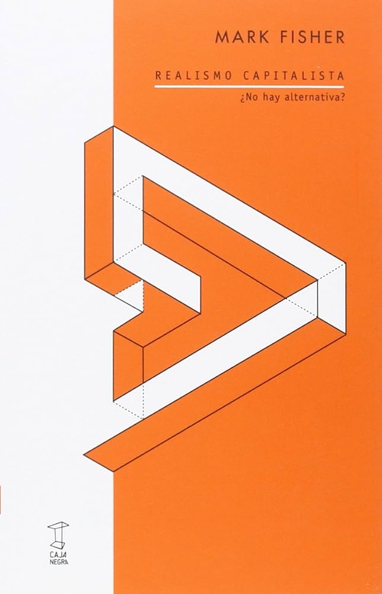
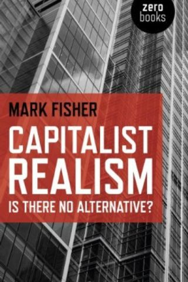

Autor: Mark Fisher
Ano: 2009
★: 4.9 (152 avaliações)
Após 1989, o capitalismo se apresentou com sucesso como o único sistema político-econômico aparentemente viável no mundo, uma situação que só começou a ser questionada para fora dos círculos mais duros da esquerda a partir da crise bancária de 2008, quando começa-se a entender a urgência de se desmontar a ideia de que “não existe alternativa”. Este livro, escrito pelo filósofo e crítico cultural britânico Mark Fisher, desnuda o desenvolvimento e as principais características do “realismo capitalista”, conceito que delineia a estrutura ideológica em que estamos vivendo. Usando exemplos de política, filmes, ficção, trabalho e educação, argumenta que o “realismo capitalista” captura todas as áreas da experiência contemporânea. Mas também mostra que, devido a uma série de inconsistências e falhas internas ao programa de realidade do Capital, o capitalismo é, de fato, tudo ― menos realista. “Realismo capitalista” revela que a ideologia está hoje assentada positiva e diretamente na crueza material do capital. Sobre um chão a partir do qual não se veem alternatives no horizonte, ocorre que é possível revolver o solo: a fratura e a revolução estão estruturalmente sob os pés.
Luis Henrique Acras - ★★★★★
Leitura indispensável para entender o mundo contemporâneo. O livro chega direto ao ponto e a entrega da livraria foi super rápida!
Raphael Alkmin - ★★★★☆
Excelente análise filosófica e cultural. Edição muito bem acabada e com boa qualidade de papel.
Mateus Vilasboas - ★★★★☆
Excelente análise filosófica e cultural. Edição muito bem acabada e com boa qualidade de papel.
Diego Roberto Gonçalves - ★★★★★
Muito bom o trabalho! Vao receber nota total!!!.
Mateus Vilasboas - ★★★★★
Livro muito bom! O site melhor ainda!